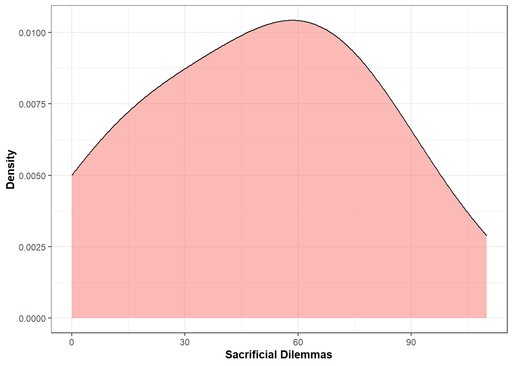

1 Study 1
Create a dataset with data from Study 1
Data_Study1_Wide<-Data_Study1_Raw %>% filter(CCA==1 & Attention_check==1)Transform the data in long format to run GEE
Data_Study1_Long<-Data_Study1_Wide %>%
pivot_longer(
c(
"Submarine_1",
"Trespassers_1",
"Hostages_1",
"Liferaft_1",
"PlaneCrash_1",
"PrisWar_1",
"Spelunkers_1",
"Soldier_1",
"Surgery_1",
"Footbridge_1",
"Cryingbaby_1"),
names_to = "Scenario", values_to = "Moral")
Data_Study1_Long$Trial<-rep(1:11, times=length(Data_Study1_Wide$Age))1.1 Data analysis
Run Generalized Estimating Equations (GEE) for each sleep variable (IV) on moral judgments (DV)
GEE_SleepQualCroS1 <- geeglm(Moral~SleepQualCro, family=gaussian, id=ResponseId, corstr="exchangeable", Data_Study1_Long)
GEE_SleepQualAcuS1 <- geeglm(Moral~SleepQualAcu, family=gaussian, id=ResponseId, corstr="exchangeable", Data_Study1_Long)
GEE_SleepQuantCroS1 <- geeglm(Moral~SleepQuantCro, family=gaussian, id=ResponseId, corstr="exchangeable", Data_Study1_Long)
GEE_SleepQuantAcuS1 <- geeglm(Moral~SleepQuantAcu, family=gaussian, id=ResponseId, corstr="exchangeable", Data_Study1_Long)Extract coefficients from GEE models
results_S1 <- rbind(
tidy(GEE_SleepQualCroS1)[2,],
tidy(GEE_SleepQualAcuS1)[2,],
tidy(GEE_SleepQuantCroS1)[2,],
tidy(GEE_SleepQuantAcuS1)[2,]) %>%
mutate(
p.value = case_when(
p.value*4 < 1 ~ p.value*4,
p.value*4 >= 1 ~ 1))Prepare data for plots
Data_PlotS1<- Data_Study1_Wide %>%
pivot_longer(
cols=c(SleepQualCro, SleepQualAcu, SleepQuantCro, SleepQuantAcu),
names_to="SleepType") %>%
rename("SleepValue"=value) %>%
mutate(
SleepLength=case_when(
SleepType=="SleepQualCro" | SleepType=="SleepQuantCro"~"Chronic",
SleepType=="SleepQualAcu" | SleepType=="SleepQuantAcu"~"Acute"),
SleepQuanthist=case_when(
SleepType=="SleepQualCro" | SleepType=="SleepQualAcu"~"Sleep Quality",
SleepType=="SleepQuantCro" | SleepType=="SleepQuantAcu"~"Sleep Quantity"))
Data_PlotS1$SleepType<-dplyr::recode(Data_PlotS1$SleepType,
"SleepQualCro" = "Quality of Chronic Sleep",
"SleepQualAcu" = "Quality of Acute Sleep",
"SleepQuantCro" = "Quantity of Chronic Sleep",
"SleepQuantAcu" = "Quantity of Acute Sleep")1.2 Summary of Study 1 results
Put results in a table
gt(results_S1) %>%
fmt_number(
columns = 2:5,
decimals = 2)| term | estimate | std.error | statistic | p.value |
|---|---|---|---|---|
| SleepQualCro | 0.03 | 0.11 | 0.05 | 1.00 |
| SleepQualAcu | 0.11 | 0.10 | 1.27 | 1.00 |
| SleepQuantCro | −0.00 | 0.19 | 0.00 | 1.00 |
| SleepQuantAcu | 0.14 | 0.17 | 0.62 | 1.00 |
1.3 Plot Study 1 results
Plot distribution for each sleep indicator
DistQualityS1<-ggplot(Data_PlotS1, aes(x=SleepValue, fill=SleepLength)) +
geom_density(alpha=0.5, size=0.5,adjust = 2) +
scale_fill_manual(values=c("#193B94", "#BDCAEE", "#193B94", "#BDCAEE")) +
theme_bw() +
ylab("Density") + xlab("") +
facet_wrap(~SleepQuanthist, scale="free_x") +
guides(fill=guide_legend("Sleep Length")) +
theme(
axis.title.y = element_text(size = 11, hjust = 0.5, face="bold"),
axis.title.x = element_text(face="bold", size = 11, hjust = 0.5),
legend.position="top",
legend.title = element_text(colour="black", size=10, face="bold"))
DistQualityS1
Plot distribution of the scores to the sacrificial dilemmas
DistMoralS1<-ggplot(Data_Study1_Raw, aes(x=Moral_DIL, fill="#193B94")) +
geom_density(alpha=0.5, size=0.5,adjust = 2) +
theme_bw() +
ylab("Density") + xlab("Sacrificial Dilemmas") +
guides(fill="none") +
theme(
axis.title.y = element_text(size = 11, hjust = 0.5, face="bold"),
axis.title.x = element_text(face="bold", size = 11, hjust = 0.5))
DistMoralS1Scatterplots
ggplot(Data_PlotS1, aes(x=SleepValue, y=Moral_DIL)) +
geom_jitter(alpha=0.6, color="#545454", size=1.2) +
geom_smooth(method="lm") +
facet_wrap(~SleepType, nrow = 2, ncol = 2, scales="free_x") +
theme_bw() + ylab("Utilitirianism") + xlab("") +
theme(axis.title.y = element_text(size = 11, hjust = 0.5, face="bold"),
axis.title.x = element_text(face="bold", size = 11, hjust = 0.5)) +
guides(size=FALSE, colour=FALSE, fill=FALSE)## `geom_smooth()` using formula 'y ~ x'